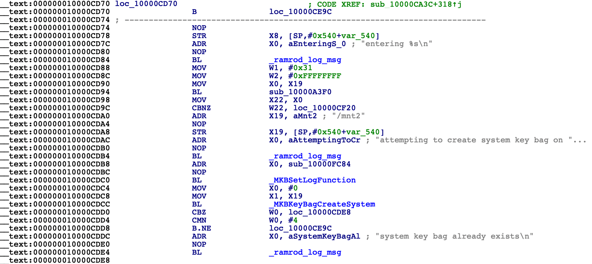

Fixing ASP
For some reason, AppleStorageProcessor (ASP) Firmware on iOS 12 is not compatible with iOS 7 and results in an early panic with iBoot not being able to load ASP FW and not being able to find root device. We can get around this by performing a tethered restore to iOS 8 to install a compatible ASP firmware that iOS 7 can recognize and use.
Keys for decryption of firmware components and proper component names can be found here.
First step is to obviously unzip the IPSW
mkdir ipsw && cd ipsw
unzip /path/to/ipswfile
Decrypt filesystem image
Just like in the previous step, we must decrypt the filesystem image (the largest .dmg file inside IPSW)
dmg extract encrypted.dmg rw.dmg -k key
dmg build rw.dmg ios8.dmg
Replace the original image with the decrypted one you just made
Decrypt iBSS and iBEC
cd Firmware/dfu
img4 -i iBSS.boardconfig.RELEASE.im4p -o iBSS.dec -k ivkey
img4 -i iBEC.boardconfig.RELEASE.im4p -o iBEC.dec -k ivkey
And patch signature checks using iPatcher:ipatcher iBSS.dec iBSS.patched
ipatcher iBEC.dec iBEC.patched -b "amfi=0xff cs_enforcement_disable=1 -v rd=md0 nand-enable-reformat=1 -progress"
Now pack into IM4P:
img4tool -c iBSS.boardconfig.RELEASE.im4p -t ibss iBSS.patched
img4tool -c iBEC.boardconfig.RELEASE.im4p -t ibec iBEC.patched
You will also need these files when making SSH ramdisk so copy these files to another folder
mkdir ../../ramdisk
cp iBSS.boardconfig.RELEASE.im4p ../../ramdisk/
cp iBEC.boardconfig.RELEASE.im4p ../../ramdisk/
Patching DeviceTree
DeviceTree needs to be patched because we want an unencrypted data partition due to the lack of SEP
cd ../all_flash/all_flash.boardconfig.production
img4 -i devicetree.boardconfig.im4p -o dtree.raw -k ivkey
This file is needed when making SSH ramdisk
cp dtree.raw ../../../ramdisk/
Open dtree.raw in a Hex Editor and find the string "content-protect"
Replace this with any string of the same length
Pack into IM4P
img4tool -c devicetree.boardconfig.im4p -t dtre dtree.raw
cd ../../../
Decrypting Kernelcache
Decrypt kernelcache without unpacking
img4 -i kernelcache.release.boardconfig -o kernelcache.im4p -k ivkey -D
This file is also needed when making SSH ramdisk
cp kernelcache.im4p ramdisk/
Overwrite original (encrypted) kernelcache
mv kernelcache.im4p kernelcache.release.boardconfig
Patching RestoreRamdisk
You can find the name of the ramdisk using the link at the top of this page
Unpack original ramdisk into raw dmg
img4 -i xxx.xxxxx.xxx.dmg -o ramdisk.dmg -k ivkey
We also need this file later
cp ramdisk.dmg ramdisk/ramdisk.dmg
Resize and mount ramdisk
hdiutil resize -size 40M ramdisk.dmg
hdiutil attach ramdisk.dmg
Patching ASR
ASR needs to be patched to bypass image validation using asr64_patcher
cp /Volumes/ramdisk/usr/sbin/asr ./
ldid -e asr > asr.xml
asr_64patcher asr /Volumes/ramdisk/usr/sbin/asr
ldid -Sasr.xml /Volumes/ramdisk/usr/sbin/asr
We now need to edit the restore options plist to disable Baseband Update and NOR flash
Changing restore options
Find options plist
sudo find /Volumes/ramdisk -name "options.*.plist"
In my case the filename is "options.n51.plist"
Open the file you get from the command above in a text editor and add the highlighted lines
Patching restored_external
restored_external needs to be patched to skip SEP firmware load (because it would fail), force unconditional pass on apticket check and force unconditional fail on keybag generation (without SEP, keybag generation is impossbile and will cause restore to freeze)
Extract entitlements
ldid -e /Volumes/ramdisk/usr/local/bin/restored_external > ent.xml
Load up restored_external in your favorite disassembler and find the string "invalid ticket", it should look like this
In this function, there should be a compare and branch on zero (CBZ) to "received valid ticket" function. This needs to be changed to unconditional branch (B). You can use armconverter to do this
Find _ramrod_load_sep_os in exports, then find the call to this function
We will need to NOP the call to this function to skip SEP load by replacing the call to it with NOP and the instruction below it with MOV W0, #0
Lastly, we need to patch create_system_key_bag to always fail. Find the string "key bag creation failed" and find the call to it
We can now patch this entire function to perform an immediate unconditional branch to "key bag creation failed"
Save changes to the file and sign with entitlements
ldid -Sent.xml /Volumes/ramdisk/usr/local/bin/restored_external
Pack ramdisk into IM4P
hdiutil detach /Volumes/ramdisk
img4tool -c xxx.xxxxx.xxx.dmg -t rdsk ramdisk.dmg
Pack all firmware components into IPSW file
zip -r ios8.ipsw .
Restore
idevicerestore uses a weird format for SHSH blobs so we'll need to make it save one using latest IPSW
oldidevicerestore -t latest.ipsw
The SHSH blob will be in a folder called "shsh/" in the current directory. We now need to rename the blob for the correct version so that it can be used when restoring (example below)
Now you can place your device into DFU mode and start the restore
iPwnder32 -p
oldidevicerestore -e -w ios8.ipsw
NOTE: If oldidevicerestore fails while trying to upload iBSS, simply run it againOnce you see "key bag creation failed: 0" the restore is complete and you can continue with the next step